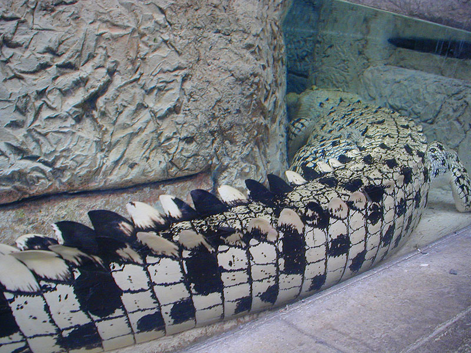

Mandalay Bay
The Golden Crocodile was the first exhibit in the Mandalay Bay Shark Reef - a giant walk through aquarium in the hotel that was really well done. The Golden Crocodiles are from Thailand and Mandalay Bay is the only place outside of Thailand that you can see them. The crocs are a hybrid of Siamese and Saltwater Crocs
back to main page
